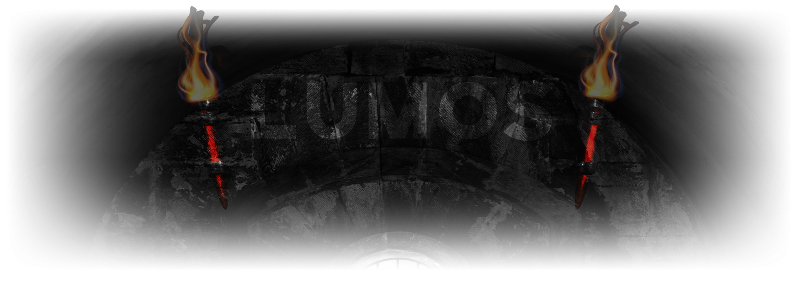

Your torch was about to die, you could barely see the surroundings when you ended up in the entrance of this dark chamber. You felt attracted to that room without any reason. You noticed writing at the top of the entrance.
Learn more about
The Realm of Lumos
01Dare to learn new spells?
If your answer is yes, feel free to join our world and encounter the adventures waiting for you. You can start learning new spells, which would be very helpful in your journey ahead. Learning spells not only gets you an NFT diploma at the end of the education period, but you will also be able to craft the critical ingredient $LMS.
$LMS will be your fuel to learn new spells in the NFT Crafting period. NFT spells are far more advanced than the elemental magic in the yield crafting period. So, the more $LMS you have, the more NFT spells you will learn in the second semester.
02$LMS Sale at Bounce Finance Market (Bazaar)

A certain amount of $LMS needs to be created before the yield crafting period begins. That’s necessary for two reasons:
- The Realm of Lumos becomes unstable when all the $LMS diminishes. So to keep the balance, $LMS needs to be created.
- It’s the critical ingredient to cast our spells. Without $LMS, adventurers can’t start learning new spells.
Elderly wizards will once more trigger the ancient magic to create $LMS after all this time. Then they will be sold in Bounce Finance Bazaar.
480.000 $LMS will be created in this phase and 300.000 of them will be sold in Bounce Finance. The exchange ratio for 1 $LMS will be 0.005 ETH in this sale. All the information and links regarding the sale will be shared on our official channels.
After the Bounce sale is over, %33 of the ETH gathered in the sale will be locked in Uniswap Bazaar with 80.000 $LMS. However, the Uniswap listing price will be %25 more expensive than the Bounce Sale price.
03Tokenmetrics

Bounce Finance Sale
(300.000 $LMS - 15%)
Bounce sale will be the first release of LMS and %15 of the total supply will be sold. LMS will be exchanged with ETH in this sale. The ones who get to buy LMS from Bounce will be the luckiest as they will be buying it cheaper than the initial listing on Uniswap and of course, they will be able to start learning sooner than others. The exact time and date of this sale will be announced on our channels in a couple of days.
Uniswap Listing
(80.000 - 4% )
Elderly wizards will allocate %33 of the ETH gathered from the sale to open a stand in local Uniswap bazaar and 80.000 $LMS issued for this Uniswap pool. That will be an opportunity for those who missed the Bounce sale; however, you should remember that the price will be %25 more expensive.
Wizard Treasury
(100.000 - 5%)
LMS is very scarce and at times, it can be crucial to have some to cast a spell. %10 of the total LMS supply is allocated to the elder wizards who will use it wisely to help Lumos stay in balance. They will use it to craft magical NFTs and to reach more magicians by buying a stand on national bazaars for LMS to be exchanged + many more. However, wizards will not be able to use these resources right away. It will be kept in a magical safe and that safe will allow wizards to withdraw only in small portions after the students receive their diplomas.
Wizard Crafting
(20.000 - 1%)
Wizards help you with your spelling classes. Every time you put effort into a spell, you craft some LMS. It depends on your ingredient size and your effort. The wizards helping you on these spells also craft some LMS, though not as much as you do. Less than %1 of the total supply.
Yield Crafting
(1.500.000 - 75%)
The most significant share will be allocated to the students as a reward for the hard work while learning how to craft in our pools. They will be able to craft up to 1.508.698 LMS in the yield crafting period.